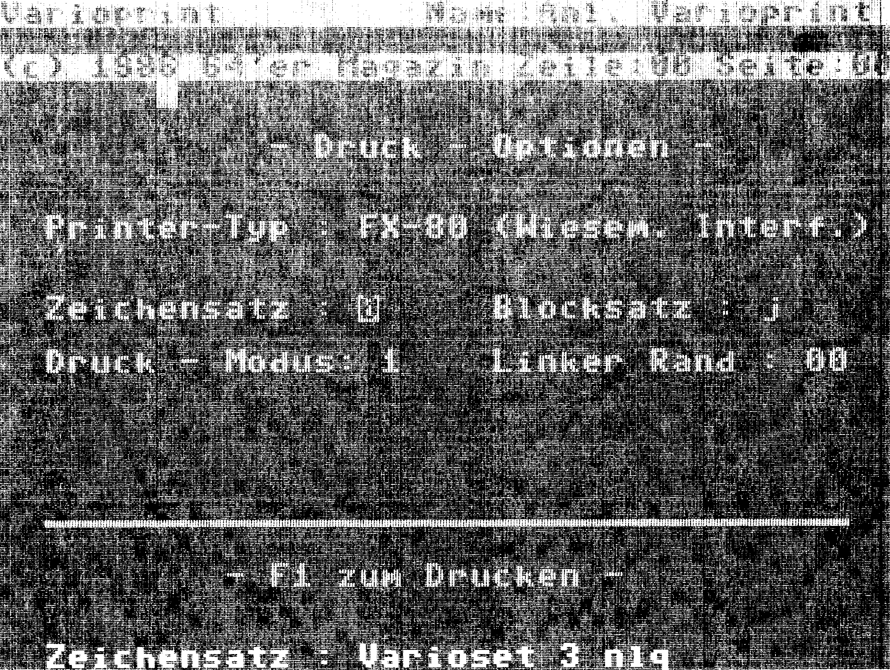
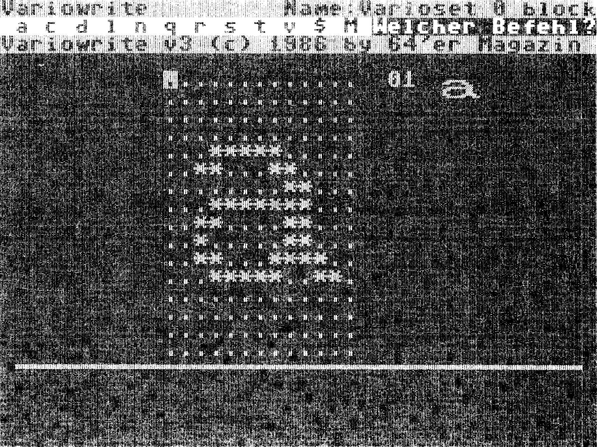

Variosystem — die gelungene Erweiterung von Vizawrite 64
Varioprint bietet die Möglichkeit, Dokumente, die mit Vizawrite erstellt wurden, in beliebigen Schriften auszudrucken, jeden Zeichensatz, sogar in NLQ-Qualität auf einfache Weise selbst zu erstellen und auch doppelt hohe Buchstaben beliebiger Fbrm abzudrucken. Da lacht das Herz des Drucker-Liebhabers!
Wer sich bislang wie die Programmierer unseres Listing des Monats (Bild 1 und 2) immer über die zu kleine, unflexible Schrift seines FX-80 oder kompatiblen Druckers geärgert hat, wer sich bei der Erstellung von Briefköpfen, Referat-Deckblättern oder Grußkarten durch die unzähligen Menüs von Print-Shop gequält hat und die mangelnde Editiermöglichkeit, Geschwindigkeit und fehlende Umlaute bemängelte, der kann jetzt aufatmen: Endlich hervorragende Editierung von Texten und gelungener Grafikausdruck. Mit dem Varioprint erhalten sie ein Programm, daß alle Vizawrite-Schriftstücke in beliebig vielen verschiedenen Schriftarten ausdruckt, wobei fünf Schriften gleichzeitig anwählbar sind. Dabei wird die wohl interessanteste Fähigkeit eines Matrix-Druckers benutzt, der Grafikdruck. Jeder Buchstabe des Alphabets wird auf der Basis einer 13 x 16 Matrix ausgedruckt. Da von den neun vertikalen Nadeln, die der Druckkopf der meisten Drucker besitzt, acht beim Grafikdruck angesprochen werden, muß jede Zeile insgesamt zweimal gedruckt werden. (Nähere Informationen über den Grafikdruck finden Sie in der Beschreibung zum Schreiberling (64'er, Ausgabe 10/85) und in dem Artikel »Hardcopy leicht gemacht« (64'er, Ausgabe 1/86).)
Near Letter Quality auf dem FX-80
Um ein gutes Schriftbild zu gewährleisten, wird das Dokument in doppelter Dichte zu Papier gebracht. Das hat zudem den Vorteil, daß bis zu 58 Zeichen (Normalmodus) in eine Zeile passen. Die mit dem Varioprint erstellten Drucke sehen stilistisch einer Schreibmaschinenseite sehr ähnlich. Zusätzlich bietet der Varioprint noch die Möglichkeit, Dokumente in echter NLQ-Schrift (Near-Letter-Quality) auszudrucken, auch wenn der Drucker diese Schrift gar nicht beherrscht. Dabeiwird das Zeichen nicht mit 16 Punkten untereinander gedruckt (Papiervorschub 19/216 Inch zwischen beiden Durchgängen), sondern mit 2 x 8 Punkte Höhe übereinander. Da das Papier jetzt nur noch um 1/3 Nadeldicke 1/216 Inch) vorgeschoben wird, füllt der zweite Druck die mechanisch bedingten Lücken des ersten Druckvorgangs auf.
Ergebnis: Die Schrift sieht aus wie aus einem Guß! Das gleiche Verfahren wird übrigens auch von den echten NLQ-Druckern angewendet, hier allerdings hardwaremäßig und deshalb mit höherer Geschwindigkeit.
(G Neumann/T. Kruse/aw)Variosystem verwandelt Ihren Drucker in eine kleine Druckerei. Schriften jeder Art, vorgefertigt oder selbst definiert — Sie haben die freie Wahl. Ganz besonders reizvoll ist der Near Letter Quaiity-Druck mit jedem Epson-kompatiblen Drucker. Zum Erstellen der Texte dient das bekannt-bewährte Vizawrite 64.
Varioprint bietet eine Vielzahl von interessanten Funktionen: Fünf verschiedene Zeichensätze haben in dem Speicher des C 64 Platz. Diese Zeichensätze können vom Dokument aus über die (vom Benutzer definierbaren) Druckersteuerzeichen 0 bis 4 in Vizawrite 64 angewählt werden. Diese Druckersteuerzeichen müssen nicht in der Formatzeile von Vizawrite 64 angemeldet werden. Sie werden genauso benutzt, wie die Steuerzeichen für Unterstreichen oder Fettdruck: Soll ein Teil eines Textes in anderer Schriftart erfolgen, so ist an dieser Stelle die Taste »CTRL« und die Nummer des gewünschten Zeichensatzes im Varioprint zu drücken. Später, beim Ausdruck mit Varioprint, erfolgt ab dieser Stelle die Umstellung auf den gewählten Zeichensatz. Vermeiden sollte man dabei, in einer Zeile zwischen einem NLQ- und einem normalhohen Zeichensatz umzuschalten. Sonst gibt es keine Beschränkung, die Zeichensätze zu wechseln. Die augenblicklich eingestellte Schriftart erscheint in der letzten Bildschirmzeile. Ist dieser Zeichensatz als NLQ-Schrift definiert, leuchtet das »n« von Varioprint grün auf.

Alle fünf Zeichensätze können beliebig nachgeladen werden. Im Klartext: Sie können mit einer voll ausgestatteten Version des Varioprint auf alle jemals erstellten Zeichensätze zurückgreifen. Alle im Speicher befindlichen Zeichensätze können vom Dokument aus angesprochen werden und ermöglichen einen Ausdruck mit maximal fünf verschiedenen Schriftarten. Vizawrite 64 legt seine Dokumente in Kurzform im Speicher ab, die Formatierung wirkt sich erst auf dem Bildschirm aus. Konkret bedeutet das, daß eine freie Zeile auf dem Bildschirm im Textspeicher nur ein einziges Zeichen (nämlich ein Carriage Return (CHR$(13)) lang ist. Ebenso verhält es sich mit den freien Zeichen zwischen den Tabulatoren oder der automatischen Zentrierung. Durch diese, den Speicherplatz schonende Methode, wird es für Varioprint möglich, mittels Generierung einer neuen Formatzeile die Formatierung des Dokumentes (in bestimmten Grenzen) zu ändern.
Da die Zeilenlänge auf maximal 58 (im Schmalschriftmodus 100) Buchstaben beschränkt ist, wird der gesamte Text auf diese Zeilenlänge umformatiert, auch wenn die originale Formatzeile länger ist (kürzere Zeilen sind natürlich trotzdem möglich). Die Tabulatoren, Rechtsbündigkeit und die Zentrierung werden auf das neue Format umgerechnet. Mit Varioprint kann also jede Textdatei, die sich auch innerhalb von Vizawrite 64 umformatieren läßt, sofort ausgedruckt werden. Der Druck selbst läßt die sechs (ESC " *" 0 bis 5) Grafikmodi des FX-80 zu. Diese, wie auch die Rechtsbündigkeit, der linke Rand und der Startzeichensatz sind vor dem Druck beliebig einstellbar. Dabei wurde Wert darauf gelegt, sämtliche Systemmeldungen, Tastenbelegungen und Bildschirmmasken denen von Vizawrite 64 anzugleichen, so daß dem Benutzer die Bedienung leichtfällt (Bild 1). Gerade um die Bedienung zu vereinfachen, wurde darauf geachtet, soviel Variationsbreite wie möglich, mit so wenig Aufwand für den Benutzer wie nötig, zu verbinden. So gehört der Varioprint zu der Kategorie der »Do-What-I-Mean«-Programme.
Varioprint ist in reiner Maschinensprache geschrieben (nicht compiliert), so daß es sehr schnell arbeitet. Wenn kein Drucker angeschlossen ist, druckt das Programm übrigens nur auf dem Bildschirm aus. Die Zeit, die es braucht um eine Zeile zu errechnen, ist kaum meßbar. Deswegen kann mit der Taste < CTRL > die recht schnelle Bildschirmausgabe verlangsamt werden. Daß es bei eingeschaltetem Drucker trotzdem relativ lange dauert, bis die nächste Zeile auf dem Bildschirm erscheint, liegt am seriellen Bus des C 64, der pro Zeile (58 Zeichen) immerhin mit 1508 Bytes gefüttert wird. Durch diese Verzögerung und durch die verminderte Geschwindigkeit beim HiRes-Druck, gleicht die Endgeschwindigkeit mit einem Matrixdrucker ungefähr der eines Typenraddruckers. Das Ergebnis übertrifft jeden Typenraddrucker aber bei weitem. Ungeahnte Variationsmöglichkeiten werden eröffnet und selbst der Ausdruck »exotischer« Zeichen ist möglich. Wir haben mit Varioprint gearbeitet und sind von der Faszination, die von diesem Programm ausgeht, hingerissen. Wir hoffen Sie werden es auch sein.
Bedienungsanleitung
Technische Daten und Lage von Varioprint siehe Tabelle 1 und Tabelle 2. Bitte beachten Sie die Eingabehinweise. Laden des Programms mit:
LOAD "BOOT",8
und mit
RUN
starten
| Zeichen | Vizawrite | Varioprint |
|---|---|---|
| Seitennummer | 163 | — |
| Ctrl 0-4 | 176-180 | 176-180 |
| Ctrl 5-9 | 181-185 | — |
| Tabulator | 219 | 219 |
| Zahlentabulator | 221 | — |
| Zentrieren | 223 | 223 |
| Format | 230 | 230 |
| Merge | 233 | — |
| Don't merge | 234 | — |
| Indent Paragraph | 235 | 235 |
| Tiefstellen | 236 | — |
| Fettdruck | 237 | — |
| Unterstreichen | 238 | 100 |
| Hochstellen | 239 | — |
| Seite | 241 | 241 |
| Textende | 255 | 255 |
| Umlaute: | ||
| ä | 101 | 91 |
| ö | 118 | 92 |
| ü | 120 | 93 |
| ß | 124 | 94 |
| Ä | 121 | 97 |
| Ö | 122 | 98 |
| Ü | 123 | 99 |
| Pointer | $033C-$03AC |
| Bildschirm | $0400-$07E7 |
| Bildschirm-Zeichensatz | $0801-$0FFF |
| Varioprint | $1000-$1FE6 |
| Zeichensatz 0 | $2000-$2FFF |
| Aktuelle Druckzeile | $2CB0-$2DB0 * |
| Zeichensatz 1 | $3000-$3FFF |
| Aktuelles Directory | $3D00-$3DFF * |
| Zeichensatz 2 | $4000-$4FFF |
| Zeichensatz 3 | $5000-$5FFF |
| Zeichensatz 4 | $6000-$6FFF |
| Dokument | $7000-$CFFF |
| *) Die scheinbare Überschneidung ergibt sich aus der Nutzung freier Bereiche innerhalb der Zeichensätze. | |
| Freier Textspeicher: 16 KByte | |
| Empfohlene Gerätekonfiguration: | |
| Computer: C 64 oder C 128 | |
| Laufwerk: 1541 oder 1571 | |
| Interface: Beliebiges Interface mit Linearkanal zum Beispiel: Wiesemann WW 92000/G | |
| Drucker: Epson FX-80, sowie alle Kompatible die über den ESC "*"-Modus verfügen, Star SG-Serie im IBM-Modus | |
| Varioset arbeitet nicht mit MPS-Druckern zusammen! | |
Der Kommando-Modus
Der Kommando-Modus wird mit der Commodore-Taste erreicht und abgebrochen. Die Befehle werden links oben angezeigt.
<CBM> + <l>(Load)
Systemmeldung:»Dokument oder Zeichensatz Nr.X laden« Laden des Inhaltsverzeichnisses, einer Vizawrite 64-Datei oder des Zeichensatzes, der gerade angezeigt wird. Die einzelnen Dateien können mit <CURSORDOWN> und <-UP> dargestellt werden. Mit < RETURN > wird eingeladen. Fängt der Name der Datei mit »Varioset« an, wird diese als Zeichensatz geladen.
<CBM> + <t>(Transfer),
keine Systemmeldung:
Ändern der Farben (Hellblau/ Dunkelblau, Schwarz/Schwarz)
<CBM> + <w>(Write),
keine Systemmeldung:
Rücksprung zu Variowrite (falls sich dieses Programm im Speicher befindet, sonst Sprung zum Startmenü)
<CBM> + <q>(Quit)
Systemmeldung:»Programm beenden«
Verlassen des Varioprint (Basic Warmstart), Neustart mit SYS 4096
Startmenü
Zeichensatz: (gültige Eingabe 0 bis 4)
Zeichensatz Nummer 0 bis 4, derjeweils angezeigte Zeichensatz kann nachgeladen werden. Die Anzeige des Namens erfolgt in der letzten Bildschirmzeile. Bei einem NLQ-Zeichensatz leuchtet das »n« von Varioprint grün auf.
Blocksatz: (gültige Eingabe j,n)
Einstellen von Blocksatz j(a) oder Flatterrand n(ein).
Druckmodus: (gültige Eingabe 0 bis 4) Grafikauflösung Zeichen/Zeile
| 0 - normal | 33 |
| 1 - doppelt | 58 |
| 2 - doppelt/schnell | 58 |
| 3 - vierfach | 100 |
| 4 - Crt Grafik | 33 |
| 5 - Plotter Grafik | 33 |
Linker Rand (gültige Eingabe 0 bis maximal der Anzahl Zeichen/Zeile der Auflösung).
Einstellen des linken Druckrandes. Die Differenz zwischen dem linken Rand und der Anzahl der Zeichen/Zeile ergibt die effektive Zeilenlänge.
Druckmodus
Der Druckmodus wird mit < Fl > aufgerufen und endet nach dem Druck automatisch. Er kann mit <RUN/STOP> abgebrochen werden.
<F1>:Erreichen des Druckmodus/Abbruch nach Stop
<SPACE>:Druckbeginn/Wiederaufnahme nach Stopp
<RUN/STOP>:Stopp bei Druck; so lange gedrückt halten, bis Systemmeldung erscheint
<CLR>:Seiten vorstellen bei Druckbeginn/Seitenumbruch. Zeiger rechts oben zählt mit. Achtung: Jede Seite sollte am Beginn eine Formatzeile enthalten!
Der zu druckende Text wird auf dem Bildschirm formatiert angezeigt. Das Unterstreichen wird durch einen Strich, die Druckersteuerzeichen 0 bis 4 durch reverse Zahlen dargestellt.
Nach jedem Seitenumbruch kann der Druck abgebrochen (RUN/STOP), die Seiten vorgezählt (CLR) oder mit der nächsten Seite fortgefahren werden (SPACE).

Mit Variowrite (Bild 2) lassen sich neue Zeichensätze für Varioprint erstellen, die entweder nachgeladen oder in Varioprint eingebunden werden können. Variowrite besitzt drei Modi, die im folgenden erklärt werden.
Der Arbeitsmodus:
Dieser Modus ist die unterste Ebene, in der man direkten Zugriff auf die Zeichenmatrix hat. Der Cursor wird ganz normal mit den Cursor-Tasten gesteuert. Die zweistellige Anzeige neben der Matrix gibt die Zeichennummer an, und das Sprite daneben spiegelt die Matrix verkleinert wider.
Steuerung:
<F1> — Punkt setzen
<F3> — Punkt löschen
<F5> — ein Zeichen vorwärtsblättern
<F6> — zehn Zeichen vorwärtsblättern < F7 > — ein Zeichen rückwärtsblättern
<F8> — zehn Zeichen rückwärtsblättern
<HOME> — Matrix löschen
<CBM> — Sprung in den Kommandomodus
Achtung! Im Arbeitsmodus wird alles sofort ausgeführt!
Der Kommandomodus:
Der Kommandomodus enthält hilfreiche Befehle, die das Erstellen eines Zeichensatzes erleichten. Er arbeitet analog zum Befehlsmodus von Vizawrite 64. Alle Befehle sind in der Kommandozeile revers angegeben. Folgende Befehle sind erreichbar, jede andere Taste führt zum Rücksprung in den Arbeitsmodus.
a(utomove):
Beim Setzen oder Löschen eines Punkts springt der Cursor eine Stelle nach rechts, was bei vertikalen Linien und beim Arbeiten am rechten Rand eher hinderlich ist. Mit diesem Befehl ist diese Funktion an- und abschaltbar.
c(opy):
Einige Zeichen lassen sich aus anderen entwickeln, zum Beispiel »F« aus »E«. Daher ist es leichter, solche Zeichen zu kopieren und dann zu ändern. Man kann normal mit <F5> bis <F8> ein Zeichen anwählen (Meldung: Was kopieren?). Durch <RETURN> wird das Zeichen übernommen. Jetzt springt man zu der Stelle, an der die Kopie stehen soll, und bestätigt wieder durch < RETURN >. Das Original bleibt immer unbeeinflußt. Die Funktion ist jederzeit durch < CBM > abbrechbar.
d(elete):
Löschen des gesamten Zeichsatzes
l(oad):
Laden eines Zeichensatzes. Am unteren Bildschirmrand erscheint der Dateiname. Mit < RETURN > wird dieser Zeichensatz geladen, mit einer anderen Taste nach weitere Zeichensätzen auf der Diskette gesucht. Es werden nur Zeichensätze angezeigt. Die mitlaufenden Zahlen sollen nur zeigen, daß die Floppy noch läuft. Abbruch des Befehls durch die <CBM>-Taste.
n(lq):
Kopiert die oberen acht Reihen auf die unteren, was für den NLQ-Zeichensatz nützlich ist. Zwei Pfeile markieren danach die neunte Reihe, als optische Hilfe. Achtung! Dieser Befehl wird ohne Sicherheitsabfrage ausgeführt.
q(uit):
Beenden des Programms.
r(epeat):
An- und Ausschalten der Tastenwiederholung
s(ave):
Speichern des Zeichensatzes. Zum Namen »Varioset« kann eine beliebige siebenstellige Kombination aus Zahlen und Buchstaben eingegeben werden. Der Befehl kann durch die < CBM > -Taste auch während der folgenden Frage nach der Schriftart gestoppt werden. Alle Floppyfehler werden abgefangen, beim Überschreiben einer alten Datei wird diese erst gelöscht.
t(ransfer):
Ändern der Farben. Es stehen nur zwei Kombinationen zur Auswahl: hellblau/dunkelblau oder einheitlich schwarz/ weiß.
v(erschieben):
Das Zeichen kann mit den Cursortasten um eine Stelle in die angegebene Richtung verschoben werden. Verlassen des Befehls ist nur mit < CBM > möglich.
$(Directory):
Das Inhaltsverzeichnis der Diskette wird angezeigt. Laden ist nicht möglich. Abbruch durch <CBM> oder <RETURN>.
M(erge):
Sprung in den Merge-Modus.
Alle Abfragen können durch <RETURN> oder <j> bestätigt werden.
Der Merge-Modus:
Der Merge-Modus ist die Verbindung zwischen Variowrite und Varioprint (zusammen Variosystem). Da er nur sinnvoll ist, wenn auch Varioprint im Speicher ist, wird beim ersten Benutzen gleich in die Laderoutine gesprungen. Danach ist das Wechseln beliebig oft möglich. Im Merge-Modus können individuelle Varioprint-Versionen erstellt werden. Als Merkmal für diesen Modus ändert sich der Programmkopf. Die Anzeige wird einstellig und gibt die Zeichensatznummer an; das Sprite zeigt das kleine »a« des angewählten Zeichensatzes. Mit <F5> und <F7> kann jetzt zwischen den einzelnen Zeichensätzen geblättert werden. Die Matrix verändert sich nicht und kann zum Vergleichen dienen.
C(opy):
Kopieren des angezeigten Zeichensatzes in den Zeichensatzspeicher. Ein darin vorhandener Zeichensatz wird zerstört. So können alte Zeichensätze übernommen werden.
L(oad):
Analog zum Befehl »1« kann ein Varioset geladen werden.
P(rint):
Wechselt zu Varioprint.
Q(uit):
Rücksprung in den Arbeitmodus.
<RETURN>:
Kopiert den aktuellen Zeichensatz an die angegebene Stelle. Der alte Zeichensatz wird dabei überschrieben.
S(ave):
Funktioniert wie der Befehl »s«. Der gesamte Bereich von $0801 bis $7200 wird gespeichert, gleichgültig, ob alle Zeichensätze belegt sind. In den Textspeicher wird ein kurzer Probetext geschrieben, damit der Benutzer nach dem Laden von Varioprint feststellen kann, welche Zeichensätze im Varioprint vorhanden sind. In der Seite 2 sind alle benutzbaren Buchstaben enthalten, wodurch ein einzelner Zeichensatz ausprobiert werden kann. Alle Fehler der Floppy werden angezeigt, es können aber einige Sekunden zwischen dem Blinken der LED und der Fehlermeldung auf dem Bildschirm vergehen.
Alle diese Funktionen müssen mit < SHIFT > gewählt werden!
Variowrite liegt im Speicherbereich von $8000 bis $9500. Der Zeichensatzspeicher liegt bei $C000 bis $CFFF. Hinweis: Texte, die länger als 17 Blöcke sind, sollten nicht eingeladen werden, wenn Variowrite sich ebenfalls im Speicher befindet — er wird sonst überschrieben.
Bitte beachten Sie die folgenden Eingabehinweise:
Alle Teile von Varioset müssen mit dem MSE eingegeben werden.
Varioset besteht aus vier Teilen, nämlich den Programmen »Boot« (Listing 1), »Varioprint« (Listing 2), »Variowrite« (Listing 3) und einem Beispiel-Zeichensatz (Listing 4). Geben Sie diese Programme nacheinander mit dem MSE ein und speichern Sie die Programme auf Diskette. Wir empfehlen Ihnen sich für das Variosystem eine eigene Diskette anzulegen, damit auch für weitere Zeichensätze noch Platz vorhanden ist. Achten Sie beim Speichern darauf, daß der erste Buchstabe von Varioprint und Variowrite ein Großbuchstabe (mit < SHIFT > zu erreichen) ist; da sich die beiden Programme gegenseitig aufrufen, wird dieser Großbuchstabe erwartet. Benennen Sie Varioprint und Variowrite auch nicht um.
Hinweis: Auf der Programmservice-Diskette finden Sie noch vier weitere sehr interessante Zeichensätze (siehe Beispiele auf der Seite 49), sowie eine Varioprint-Version, in der diese fünf Zeichensätze bereits komplett eingearbeitet sind (107 Blöcke).
(Gregor Neumann/Thomas Kruse/aw)